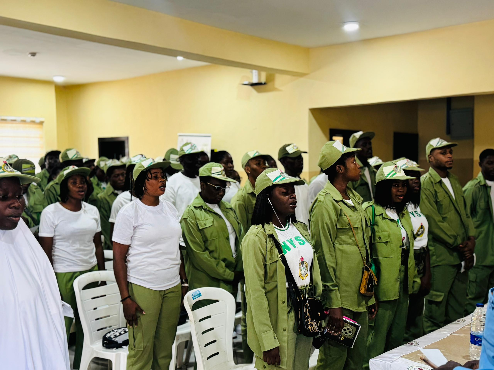
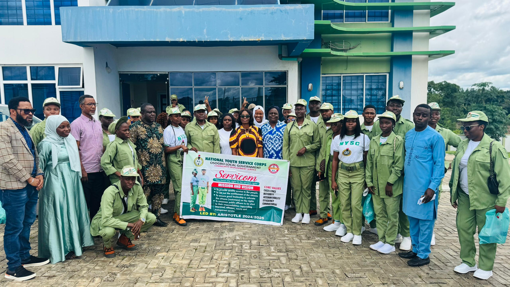
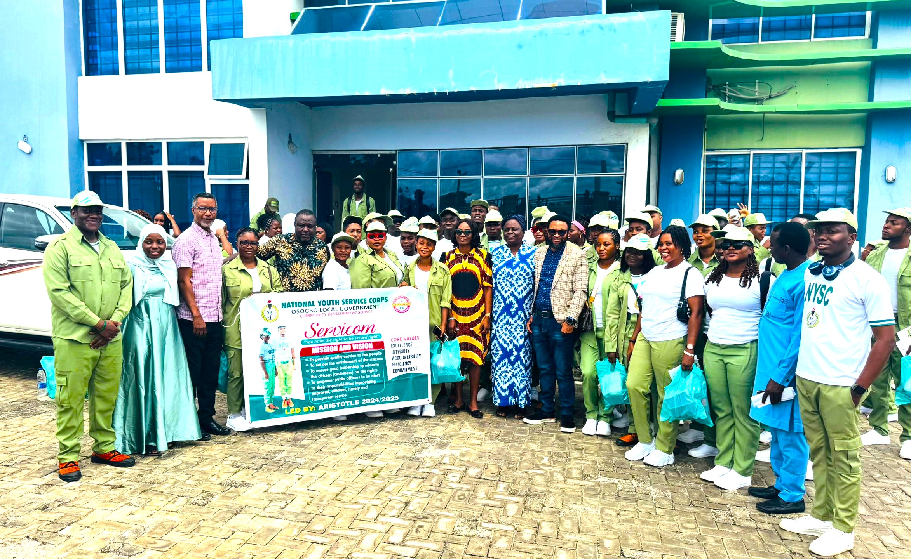
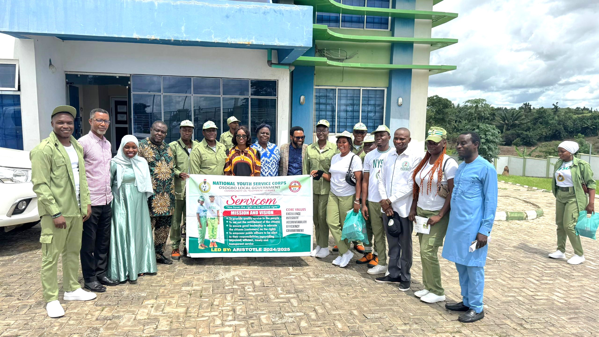

SERVICOM CDS
NYSC Osogbo, Osun State
NYSC Osogbo, Osun State
Collaboration between FCCPC and NYSC SERVICOM CDS Group
To strengthen collaboration between FCCPC and NYSC Servicom CDS group, foster corps members' awareness of consumer protection laws, and sensitize participants on FCCPC's mandate in ensuring consumer rights and fair market practices.
NYSC Servicom CDS corps members, FCCPC Osun State staff, and invited stakeholders.
The partnership fosters continuous sensitization on consumer rights and encourages corps members to become ambassadors of consumer protection.
Corps members are empowered to become ambassadors of consumer protection in their communities.
Sustains collaboration between NYSC and FCCPC for future programs and initiatives.
PHOTO CREDITS




